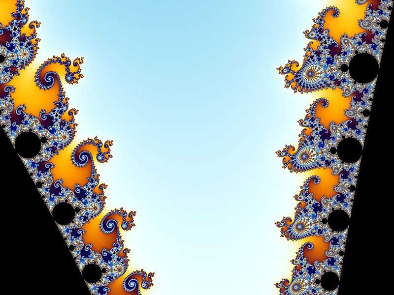
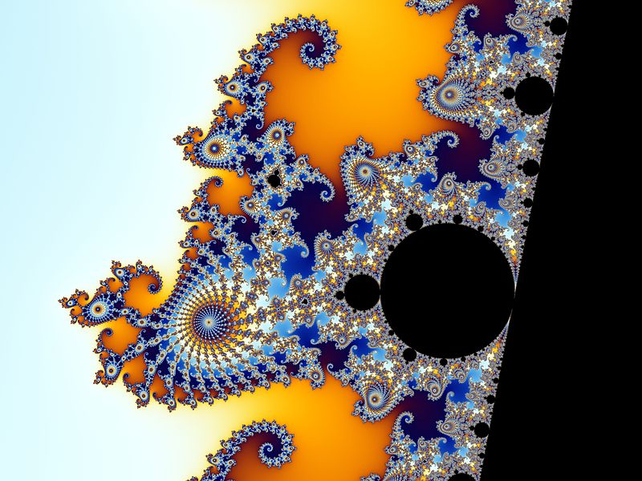
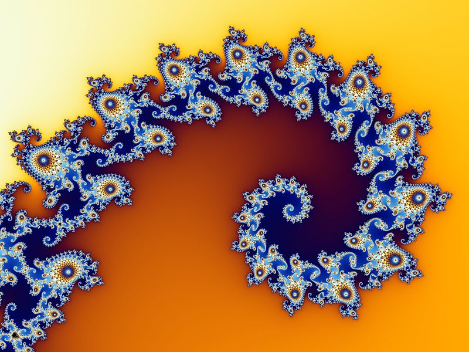
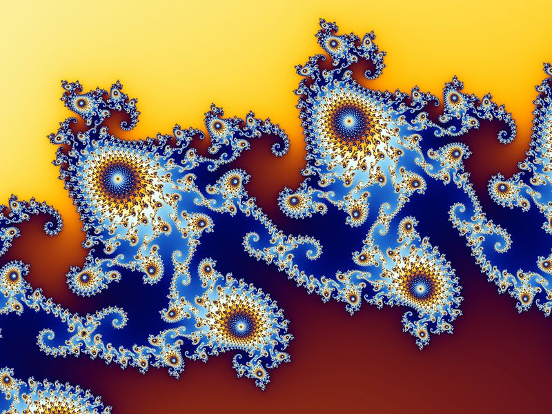
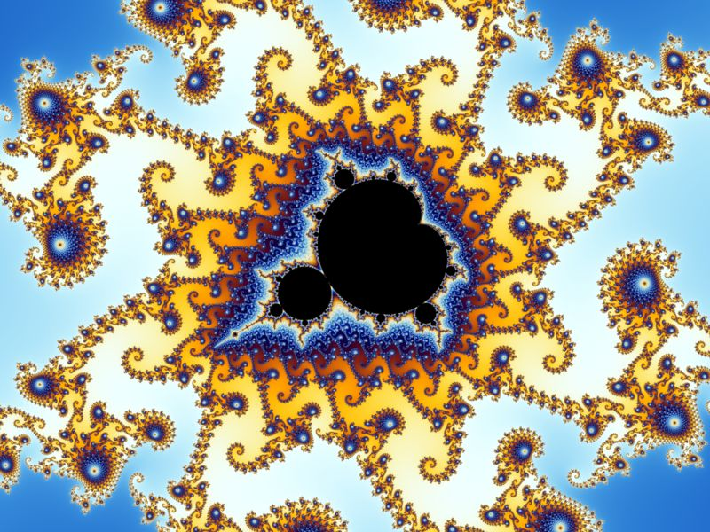
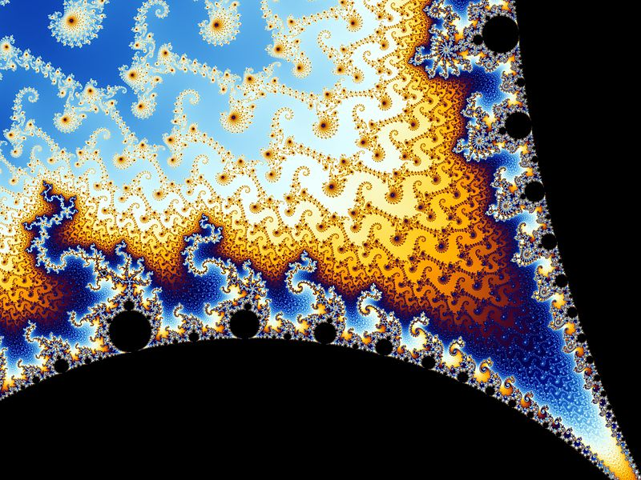
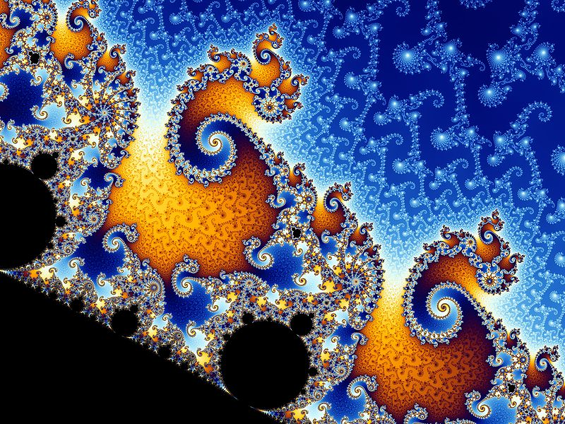
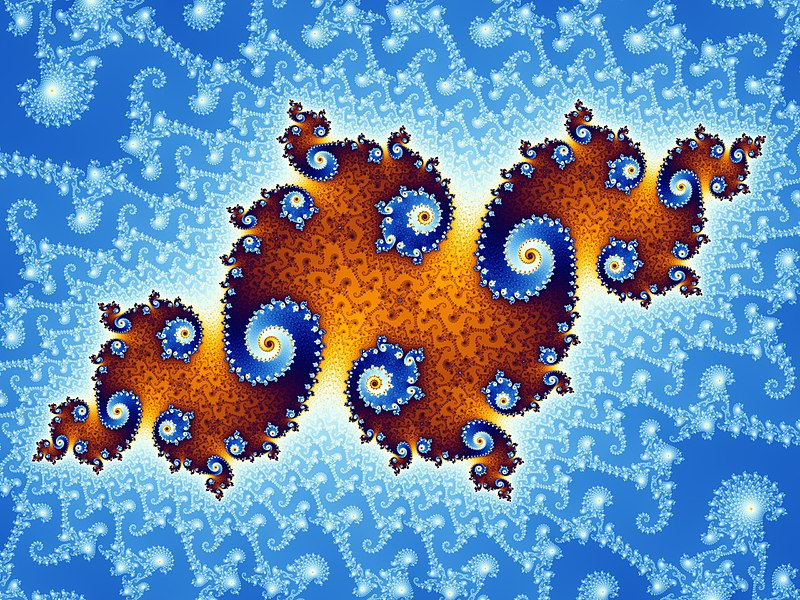

L'ensemble de Mandelbrot doit beaucoup sa popularité à la variété et la beauté de ses structures et à la profondeur infinie de ses détails.
Durant cette partie, vous allez observer un zoom dans un point précis de l'ensemble de Mandelbrot et découvrir diverses structures commentées.
Le zoom serait effectué a autours du point \(–0,743643887037151 + 0,13182590420533i\).
| Etape | Description |
|---|---|
| Voici l'ensemble de Mandelbrot initial. En fonction des endroit où vous zoomerez, vous obtiendrez des motifs différents. |
|
| Cette vallée a été baptisée « vallée des hippocampes ». | |
|  | Nous pouvons ici observer sur la gauche des spirales doubles, et sur la droite les fameux « hippocampes » qui caractérisent la vallée. |
|  | Un « hippocampe », tête en bas. Cet hippocampe est composé de 25 « antennes ». Sur la plus longue antenne, celle qui mène à la « queue » de l'hippocampe, on reconnaît une copie réduite de l'ensemble de Mandelbrot, appelée « satellite ». |
|  | Extrémité de la queue de l'« hippocampe ». |
|  | Une section de la queue. Cette structure complexe est composée d'un seul et unique chemin qui mène jusqu'à l'extrémité de la queue. L'ensemble de Mandelbrot est un ensemble simplement connexe, ce qui signifie qu'il n'y a ni boucles, ni ilots. |
|  | Chacune de ces couronnes est composée de spirales similaires. Leur nombre s'accroit en puissances de 2, un phénomène typique de l'environnement des satellites. Le chemin vers l'extrémité de la queue entre dans le satellite par le point d'inflexion de la cardioïde et ressort par l'extrémité son antenne. |
|  | La « vallée des hippocampes » du satellite. Toutes les structures déjà rencontrées précédemment réapparaissent. |
|  | Double-spirale avec satellites. Nous allons maintenant zoomer sur une des structures dentelées blanches en haut à droite de l'image. |
| Ce double crochet rappelle, encore une fois, la forme en spirale de la queue d'un « hippocampe ». | |
|  | Des îlots apparaissent, à la manière d'une poussière de Cantor. Ces structures sont elles-mêmes connectées à une structure centrale que nous pourrions découvrir si nous poussions encore plus loin le grossissement. En théorie, le grossissement pourrait ainsi être infini, et faire découvrir sans cesse de nouvelles structures. Pour en voir davantage, vous pouvez visioner la vidéo précédente. |